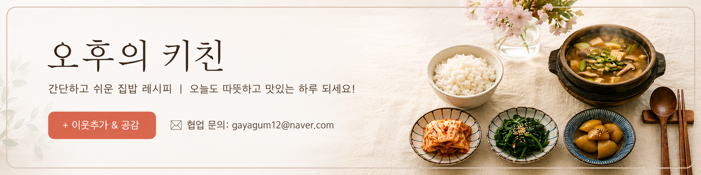

🛒 코스트코 한식
코스트코 아롱사태 삶는법: 부드러운 수육과 만능 육수 활용 뭇국 레시피

코스트코 정육 코너의 스테디셀러인 아롱사태(Beef Heel/Shank)는 가성비가 뛰어나고 콜라겐이 풍부해 푹 삶아내면 쫄깃하면서도 부드러운 극상의 수육이 완성됩니다. 특히 한 번 삶아두면 진한 소고기 육수로 소고기뭇국, 미역국, 떡국은 물론 아롱사태 장조림까지 다양하게 응용할 수 있어 살림의 만능 치트키가 됩니다. 실패 없이 냄새를 잡고 부드럽게 삶는 과학적 조리 팁을 공유합니다.
1. 아롱사태 손질 & 핏물 제거의 과학
아롱사태는 소의 뒷다리 장딴지 안쪽에 위치한 부위로, 결합조직(콜라겐)과 근육이 촘촘합니다. 핏물을 제대로 제거하지 않으면 누린내가 육수에 배어들 수 있습니다.
- 키친타월 1차 핏물 제거: 겉면의 수분과 핏물을 꼼꼼히 닦아내고 과도한 겉기름과 두꺼운 근막만 살짝 정리합니다. (내부 힘줄은 삶으면 젤라틴화되어 쫀득해지므로 다 제거하지 마세요.)
- 찬물 침지: 찬물에 1~2시간 정도 담가 속 핏물을 빼줍니다. 중간에 물을 2번 정도 갈아주면 더욱 깔끔합니다.
2. 부드러운 아롱사태 삶는 시간 & 향신 채소 배합
콜라겐이 부드러운 젤라틴으로 전환(Gelatinization)되기 위해서는 약불에서 1시간 20분 ~ 1시간 30분 이상 은근하게 삶는 시간이 필수입니다.
🍲 냄비 삶기 황금 향신 재료 (아롱사태 1.5kg 기준):
대파 1대(뿌리 포함), 통마늘 10알, 통후추 1큰술, 양파 1개, 생강 한 톨, 청주(또는 맛술) 3큰술, 물 2.5~3리터
- 냄비에 물과 향신 채소를 먼저 넣고 팔팔 끓어오를 때 아롱사태를 넣습니다. (육즙을 고기 안에 가두는 원리)
- 초반 10분간 강불에서 떠오르는 거품과 부유물을 숟가락으로 걷어냅니다.
- 뚜껑을 닫고 중약불로 줄여 1시간 10분 동안 뭉근하게 삶아줍니다.
- 젓가락으로 가장 두꺼운 부분을 찔렀을 때 핏물 없이 쑥 들어가면 불을 끄고, 뚜껑을 덮은 채로 15~20분간 뜸(Resting)을 들입니다.
3. 맑은 만능 아롱사태 육수 활용: 소고기 뭇국
고기를 건져낸 육수는 면포나 고운 체에 밭쳐 식힌 후 굳은 기름기를 걷어내면 맑고 투명한 만능 소고기 육수가 됩니다.
- 뭇국 끓이기: 냄비에 나박 썬 무와 찢어둔 아롱사태를 넣고 아롱사태 육수를 붓습니다.
- 간 맞추기: 국간장 1큰술, 참치액 1큰술, 다진 마늘 1/2큰술로 간을 맞추고 대파를 듬뿍 넣어 한소끔 끓여내면 깊은 감칠맛의 소고기 뭇국이 완성됩니다.
💡 예쁘게 써는 인플루언서 꿀팁
뜨거울 때 바로 썰면 고기 결이 부서지기 쉽습니다. 한 김 식힌 후(냉장고에 30분 정도 살짝 굳히면 더욱 좋습니다) 얇게 편 썰어 부추와 함께 접시에 담고, 따뜻한 육수를 자작하게 부어 연겨자 초간장에 찍어 드세요.